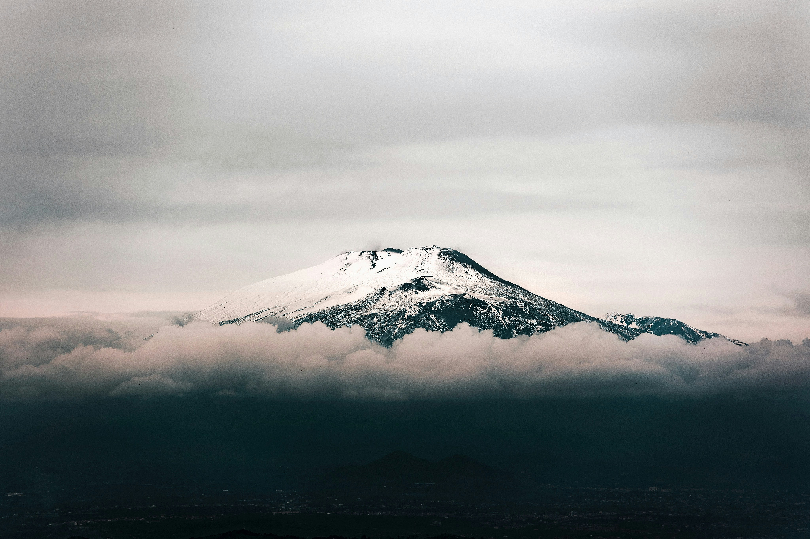
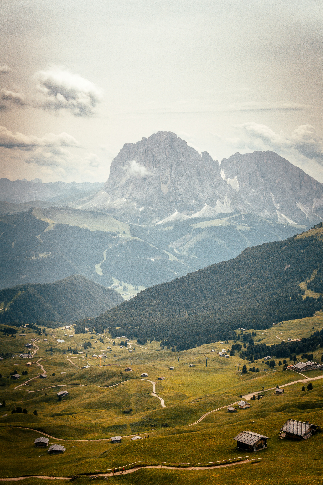
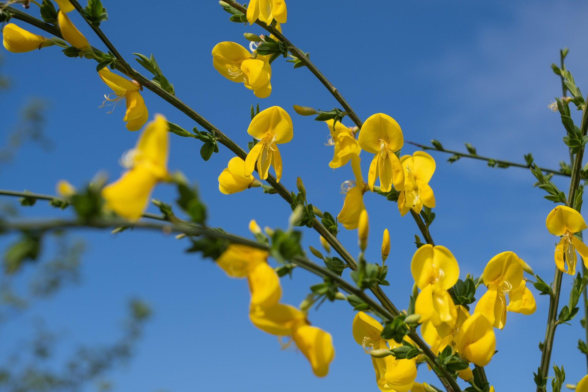

Esplora i parchi d'Italia:
Biodiversità, paesaggi, tradizioni, natura, cultura.
I parchi naturali italiani sono un tesoro di ecosistemi ricchi, paesaggi mozzafiato e unici legami tra uomo e ambiente.
Scopri flora, fauna e le storie che rendono speciale ogni angolo protetto del nostro Paese.


